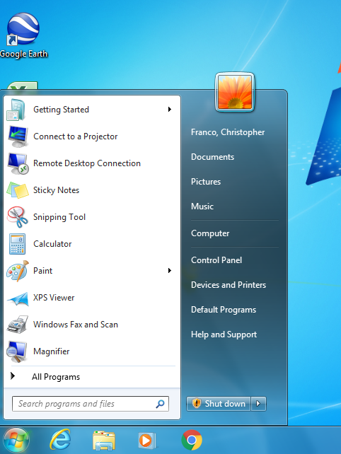
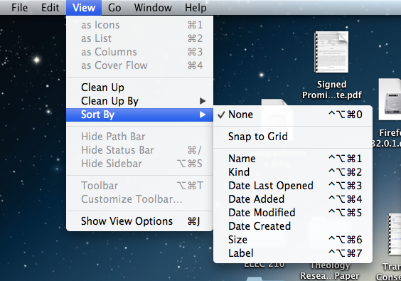
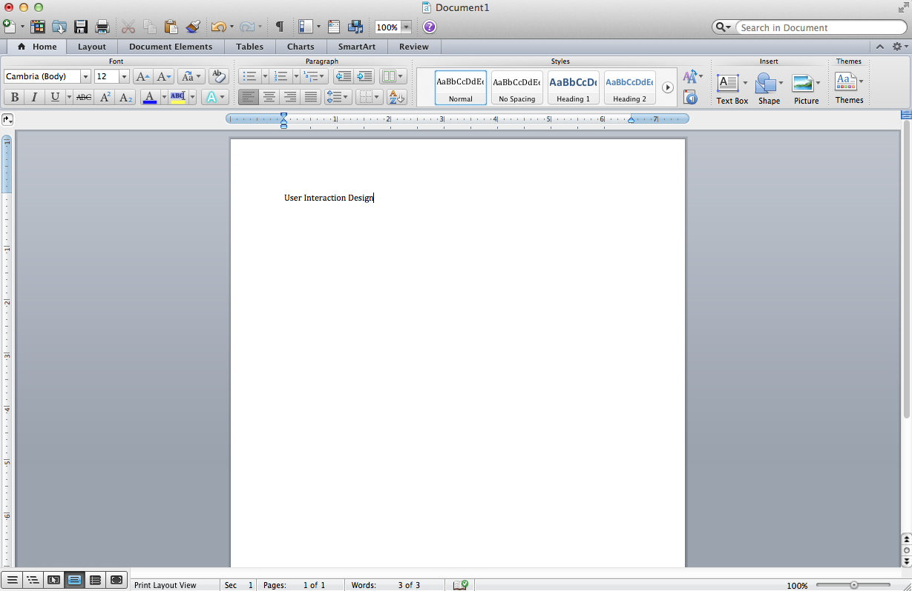
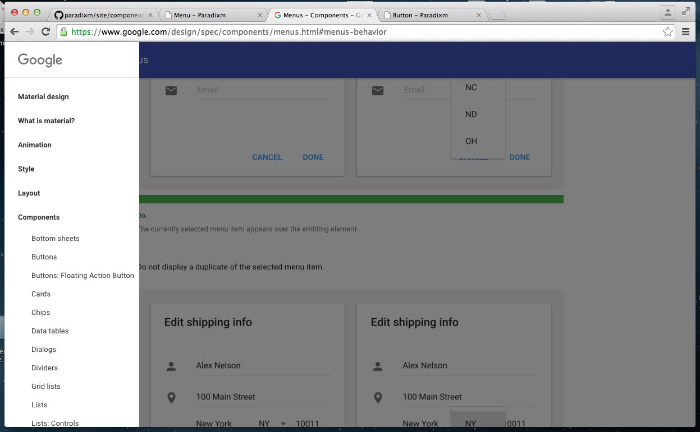

Menus have been the go-to method for displaying (and hiding) lists of items and buttons for decades.

And like these examples, they tend to follow the standard form of having items listed from top to bottom with anywhere from 1 to around 25 items to choose from.Of course, these items can often be menus themselves within other menus.
Menus are usually located on the "edges" of graphical interfaces. For example, the Mac OS X graphical interface provides menus at the top of the Desktop screen that are always available, yet out of the way from high-activity portions of the screen.
This pattern seems to extend to application or browser windows as well.
Microsoft Word
Google Design Guidelines Website
A menu is a list of options or actions to be chosen or performed. The typical menu is stacked vertically. That is to say that each item is listed from top to bottom, typically in some order.
// Android Auto // Although obviously a Google product, it’s not as continuous as Apple’s Carplay is. The difference between Android 6.0 to Android Auto isn’t as obvious until you get into individual apps, such as Google Maps or the music player. There is a bar on the bottom which houses (in order): Google Maps, Phone, “Home”, Music, and “Return to Audi MMI (Multimedia Interface).” Within those, you nudge the controller to the right to access “Hey Google” and to the left to access more options within the app, such as showing/disabling traffic on Google Maps. Menus are typically placed on the edges of the screen to minimize intrusiveness of the selected application in use. // Apple Carplay // Similar to iOS feel that it is based on. Allows for the user to easily pick up on Carplay since they’re already familiar with their iPhone. Gridded menu system like the iPhone that it’s running on.
OS X Finder

OS X Messages

OS X Tweetbot

iOS Contacts

iOS Reminders

iOS Tweetbot

Pebble Menu

Pebble Old

Pebble Timeline

Typical Behavior
A menu is typically presented for the purpose of selecting an action to perform, or selecting a particular item to use.
The most relevant event on these platforms are the “click,” which tells it whether to advance deeper or retreat out of the app. Second would be to “scroll”, which moves the selector around to allow the user to “click” what they want to.
Typical Behavior
On most platforms, menus are usually accessed by first clicking on a button.The menus then expand to reveal the items they hold. On most platforms, users are also able to hover over to a different menu button and, without clicking, expand those other menus as well after havingalready clicked on one. This includes menu buttons within the menu itself. The Windows design guidelines call this "cascading," and it is used a method to keep menu short. Small side-facing arrows are placed next to the labels of items that are cascadable.
To exit a menu on most platforms, the user can click outside of the open menu to close it. The menu also usually disappears when the user selects one of its items.
When an item is selected, the menu indicates this action with a flashing highlight. Though, this usually happens so fast that the user's eyes have likely moved to the newly opened menu or window triggered from the button rather than notice the menu's indication.
As for most components on a graphical interface, feedback to the user is a crucial aspect, specifically for when the user is attempting to perceive the system state and evaluate its outcomes (as outlined by Don Norman's Stages-of-Action Model). Menus usually do have indicators, such as grayed out, unclickable items, to indicate which state the menu is in.
There are also menus that remain hidden unless invoked by the user, such as the menu that appears when a user right-clicks (or ctrl + click in the case of Mac OS X).
Events
The most relevant menu event is the click. A click event indicates that the user has selected a particular action or item from the list. Another event is the hover, indicating that a pointing device is explicitly within the button’s bounds. Another event is the scroll, displaying more options than what can be presented on the screen presently. Some platforms or implementations have included other components into an item, like a swipe, which can display alternative actions for the item, or a checkbox. The most relevant event on these platforms are the “click,” which tells it whether to advance deeper or retreat out of the app. Second would be to “scroll”, which moves the selector around to allow the user to “click” what they want to.
State Diagram
Component in Action
iOS Contacts

Pebble Timeline

Variants
Grid - Apple TV Homescreen

Custom Content - OS X Color Picker

Custom Content - Android Auto Home
These are only a few of the many interfaces that can be used to display options or actions. Depending on the content displayed, it may be better to create a custom interface. In the case of the OS X color picker, instead of listing names of colors in a standard menu, they opted to recreate a crayon box and visually display what the available colors are. In the case of the Apple TV, while you could simply list all possible apps, they opted for a grid to take better advantage of the wide aspect ratio of a TV. An easy way to locate menus in Google’s system is to search for three parallel bars, which clearly indicate more options.
Priority Metrics
The basic menu being a fundamental component since the creation of the command-line interface, it has had plenty of time to mature and is on virtually every platform. As such, all usability metrics are important to it. The origins of menus date back to the days of pen and paper, as an easy way to organize equivalent information.
Users who are seeing a menu for the first time are immediately familir with its use by its similarity to the pen and paper. This makes learnability easy as the concept is present from childhood. Between platforms and across time, the fundamentals of a basic menu haven't changed which maximizes memorability.
Users must have no delays with using menus because it is the intermediate step between choosing an action or item and that action being performed or moving on with the item selection. Efficiency is of the essenence here. The primary time consumer is the scrolling of a manu that cannot fit onto the screen in its entirety. Depending on the platform, the scrolling event must be responsive.
Users should never select an item in the menu by mistake. This is more in the realm of the interface component that is used within the item in the menu than the menu itself. However, for example, scrolling the menu should not be mistaken for selecting a particular item. This is up to the platform to make sure that the compents that can be used within items don't conflict with the menu itself.
Learnability: The learning curve for Android Auto is significantly worse than for Apple Carplay. Efficiency: Android Auto is more complicated than Apple’s simple, gridded layout, but can only accomplish the same amount of work. Memorability: Although it took a while to learn the system, once learned, is intuitive and usable. Errors: Not many errors other than how to activate the “Hey Google” button. That took a few minutes of playing around with the system and trial and error. Satisfaction: Doesn’t look at nice as Apple Carplay due to a non-adjusting aspect ratio (tested on two phones).
Priority Metrics
- Learnability
- Efficiency
- Memorability
- Errors
- Satisfaction
The five usability metrics outlined by Jakob Nielsen in his book, Usability Engineering (page 26), are of critical importance to menu components on interfaces. For example, we can imagine how much less effective software development in general would be had these metrics not been taken into account in the design of file Directories, which are crucial representations of menus that allow users to organize and structure data.
A majority of menu components represent a list that someone might draw on paper with items to keep track of or investigate. These specific representations, in this respect, are highly learnable for, say, someone who has never used a computer before. It is in fact important that users are not hindered by a complex arrangement of items (Learnability). And given that menus are so common (and crucial to the organization of a graphic interface), it is important that users can quickly learn when, where, and how to access them so that there won't be too much time spent simply trying to locate items or functions in an application (Efficiency).
Current menu designs are extremely memorable as well because they are organized as they would be on paper, such as the table of contents at the beginning of a book (Memorability). Also, it is probably best that menus be fairly simple to access and use and have adequate feedback features for users to reduce the number of errors with using them (Errors). Menus might not be a suitable element for measuring user satisfaction since it may often be taken for granted as a "component" in the system to begin with (Satisfcation). Google's design guidelines mention how users don't usually notice the menu component until it malfunctions or the user makes an error.
Key Characteristics
Feedback
Perhaps the most important interaction design principle that a menu must follow is feedback. Users must never doubt whether:
- the scroll event was performed and the listings changes displayed
- the item they have currently selected (for platforms needing abstract pointing)
- the action being performed on a particular item (dependant on the platform and the available actions for an item)
Pebble Guidelines
According the Pebble design guidelines, some of the most important parts of the interface should be the speed of the interaction. Something else they emphasize is the the creation of a unique UI that isn't necessarily dependent on the Pebble UI. Simplicity is king.
iOS Guidelines
According to the iOS Guidelines, the most basic menu is the Table View. It displays data by dividing data into rows. The most basic type is plain, which options for a header, a footer, and an index that can be presented along the side of the list to more easily navigate the list. The second general type is grouped, whereby each group can have a header and/or footer. An index is not typical for this type.
Key Characteristics and Best Practices
The following attributes for menus across platforms have allowed much more choice and accessibility to be included in a single page (or single interface), as opposed to requiring users to navigate primarily using menus by constantly switching to different windows or screens each time they need to access a new list of items to choose from.
Labeling
The OS X, Windows, and Google design guidelines all recommend that menu titles should be contextualized so that users can generally know what a menu contains before they open it. This way users don't have to spend extra time exploring after having clicked on a menu with the wrong content. Apple adds to these contraints by saying that labels should be as short as possible without sacrificing clarity, and also suggest that icons should not be used as menu labels (nor should a mix of labels and icons) because users can confuse them with "menu bar extra."
Each of the guidelines also set a rule that if three or more labels/items have the same word, that is when developers should choose to cascade those items under a general item. (i.e. Insert Line Before, Insert Line After, Delete Word Forward, Delete Word Backward, and so on can all be cascaded under the general item "Text" to imply they are text editing commands.)
Placement
Google recommends that when it comes to behaviors like expanding, menus should appear on top of the elements they are emitting from so as to not remove it from its context. We can clearly see from OS X and Windows interfaces, however, that their menus often appear below or next to the element that was just clicked. Menus should not be a primary method for navigation in an app.
Items
The arrangement of items within a menu is just as crucial as the menu itself. Both OS X and Windows design standards make use of grouping in their menus. From the previous images, we can see that there are thin lines dividing the list into groups of interdependent attributes. According to their respective guidelines, developers should generally avoid combining actions and attributes in the same group.
"Arranging menu items in logical groups helps users locate commands quickly. As you figure out how to group menu items, it often works well to refer to the user’s mental model of your app’s task. To learn more about this concept, see Mental Model (developer.apple.com)
Additionally, OS X guidelines recommend placing the most frequently used items in groups at the top of the menu. Of course, the key here is to not arrange strictly by frequency of use, but by grouping items first and then arranging by frequency.
Platform-Specific Instances
iOS
With iOS, Apple was able to create the first direct interaction between a person and the content they are manipulating. Instead of having some device like a mouse or click wheel be the abstraction between the human interaction and the menu, the interface revolves around the direct interaction between the person and the content by way of finger touching. The event of scrolling is done by way of pushing the content on the screen up and down the screen.
Pebble
With Pebble, in the name of preserving battery life and minimizing user error, they decided to go with interaction by way of physical buttons along the side of the device, a touchscreen of that size argued as being a bit too clunky to hit the item you intend with your fingers.
Credits & References
Provide references or links to any information, image, or media sources used.